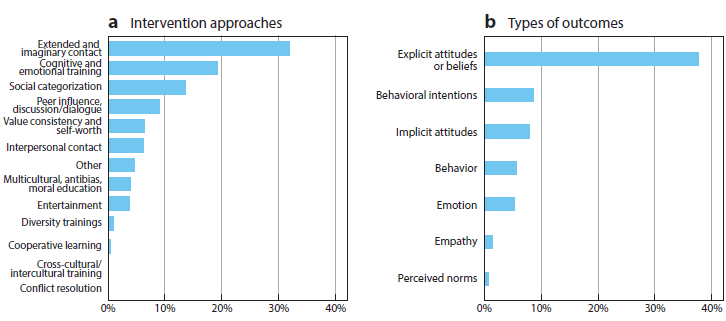
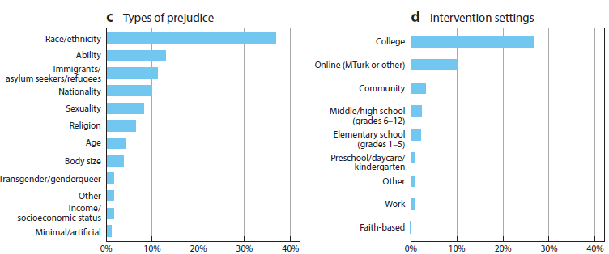
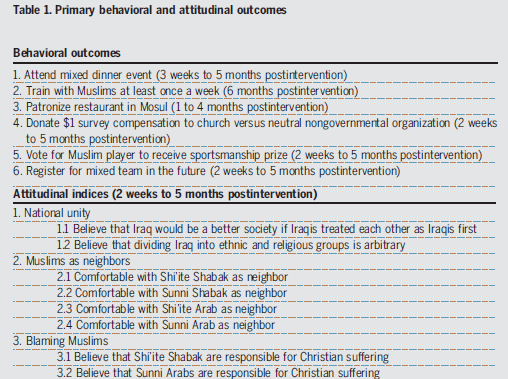
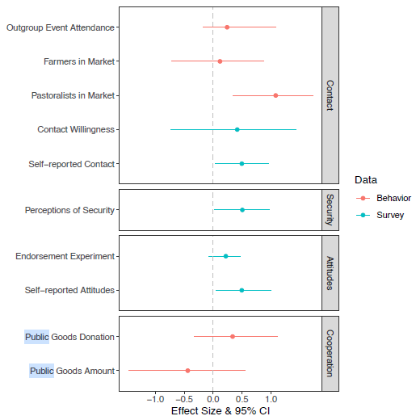
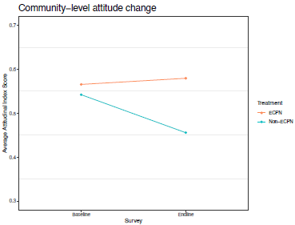

Conflict & Cohesion 1
Experiments to Improve Intergroup Relations
Logistics
Assignments
- Today
- Thursday
- Think very seriously about the data for your final project
- Come with questions
Agenda
- Review of last 3 classes
- Final Project Assignment
- Conflict and Cohesion
Final Project Discussion
Final Project
- Data analysis project with data of your choosing
- Formulate a research question
- Find data that can help you answer that question
- Apply the tools and methods from this course
- Write-up analysis
- Produce a webpage to present your results for public consumption
Write-up
- Introduction to research question and data
- Discussion of research design, assumptions, and threats to inference
- Visualization describing your data
- Presentation of results from a regression model and discussion of implications for research question
- Discussion of policy implications
Public Datasets
- Varieties of Democracy
- World Bank Development/Governance Indicators
- Armed Conflict Location & Event Data Project (ACLED)
- AidData
- Demographic and Health Survey
Other types of data
- Election returns (various compilations, government websites)
- Replication data (Dataverse, journal websites)
- Public opinion (various ‘barometer’ surveys)
My Datasets
- Machine Learning for Peace
- Cambodian NGOs (n \(\approx\) 100)
- Convenience sample
- Panel survey, financial data, networks, open-ended responses
- Ethiopian University Students (n \(\approx\) 900)
- Representative sample
- Panel survey, networks, open-ended responses
- Ghanaian Radio Stations (n \(\approx\) 400)
- Convenience sample
Assignment 1
March 12
- Send me a quarto html file that:
- Briefly describes your research question
- Proposes a dataset and measures that will help you answer it
Conflict Overview
Causes of Conflict
The puzzle of conflict
- Fighting is always more costly than a negotiated settlement
- Bargains can’t always be reached
- Uncertainty
- Commitment problems
- Some actors benefit from conflict
- These actors will often mobilize on intergroup cleavages
Paluck et al. (2021)
Types of interventions
Applied Interventions
- Anti-bias, multicultural, and moral education
- Diversity Training
Types of interventions
Research Interventions
- Cognitive and emotional training
- Value consistency and self-worth
- Peer influence, discussion, and dialogue
- Social categorization
- Entertainment
- Contact
Problems with existing research
- Treatment intensity
- Focus on light-touch interventions
- Measurement duration
- Realism and sample selection
- Publication bias
- Small samples yield bigger effects
Problems with existing research

Problems with existing research

Land-mark Studies
- Social contact
- Sports in Iraq and India
- Interpersonal conversations
- Conversations in USA
- Workplace diversity training
- Global corporate environment
- Normative interventions
- Social sanctioning on Twitter
Mousa (2020)
Why Study Cohesion?
What is social cohesion?
- Patterns of cooperation among individuals from different social groups who live and work in close proximity
Why Study Cohesion?
Why do we want to increase cohesion?
- Better governance
- Adherence to norms and laws
- Sustainable peace
- Identity as a cleavage
- Cooperation on peace agreements
Intervention
What is the intervention?
- Randomly assigning Christian teams to have three muslim players
What is the design?
- Block randomization on baseline perceived commonality
Outcomes
Generalizability
- On-the-field
- Off-the-field
Domain
- Behavioral
- Attitudinal
Outcomes

Findings
Main findings
- Improved behavior towards Muslim teammates
- No improvement in generalizable behavior
- No improvements in attitudes toward Muslims
Exploratory findings
- Strong effects among successful teams
- Improved generalizable behaviors across the league
- Improved generalizable attitudes of exposed residents
Policy Implications
- Contact works, but in a narrow way
- We can improve people’s treatment of those they have contact with, but it doesn’t generalize
- This necessarily limits the potential impact
- We can reduce discrimination without attitude change
- Creating personal ties can facilitate trade, negotiation, etc.
Grady et al. (2023)
How contact can promote societal change
Theory
- Contact can create societal change through social diffusion
Mechanisms for diffusion
- Changing norms
- Knowledge of positive contact
Intervention
Grant program for conflict-affected villages
- Mixed-group committees deciding on resource allocation
- Mediation training
- Forums to discuss conflict
- Publicly visible cooperation
Design
- Village-level random assignment
Outcomes
- Contact
- Self-reported contact
- Contact willingness experiment
- Observed behavior
- Perceptions of security
- Attitudes
- Endorsement experiment
- Self-reported attitudes
- Cooperative behavioral game
Findings

Findings

Findings

Alternative Explanations
- Placebo outcomes
- Bundled treatment
Policy Implications
- Contact interventions can have wider societal change and reduce the barriers to peace between conflicting groups
- For social diffusion, contact must be highly public